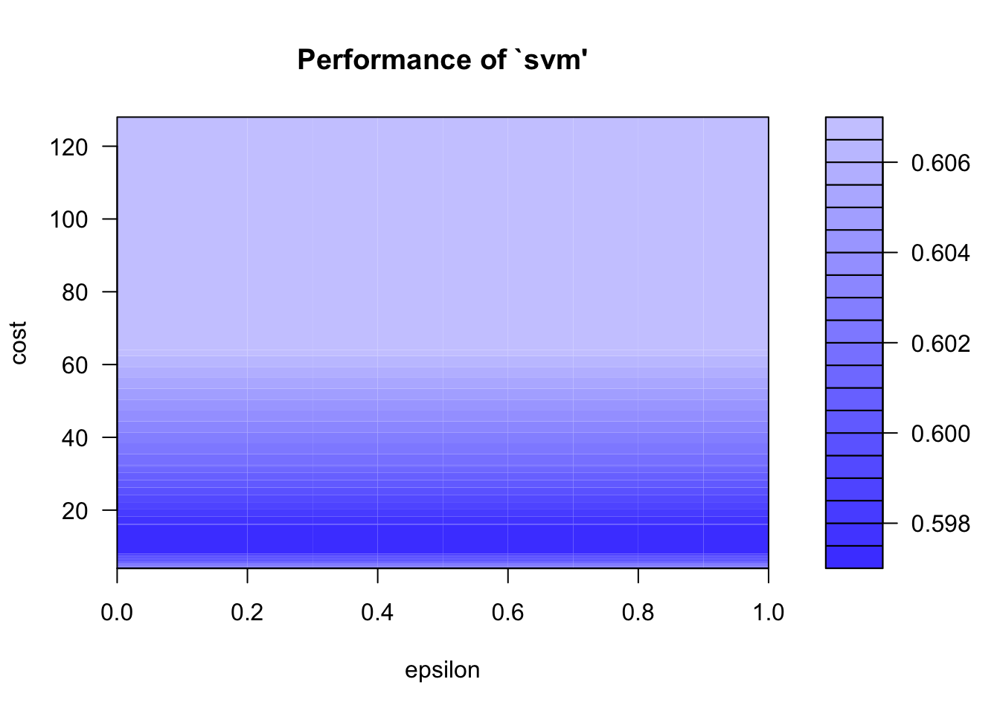
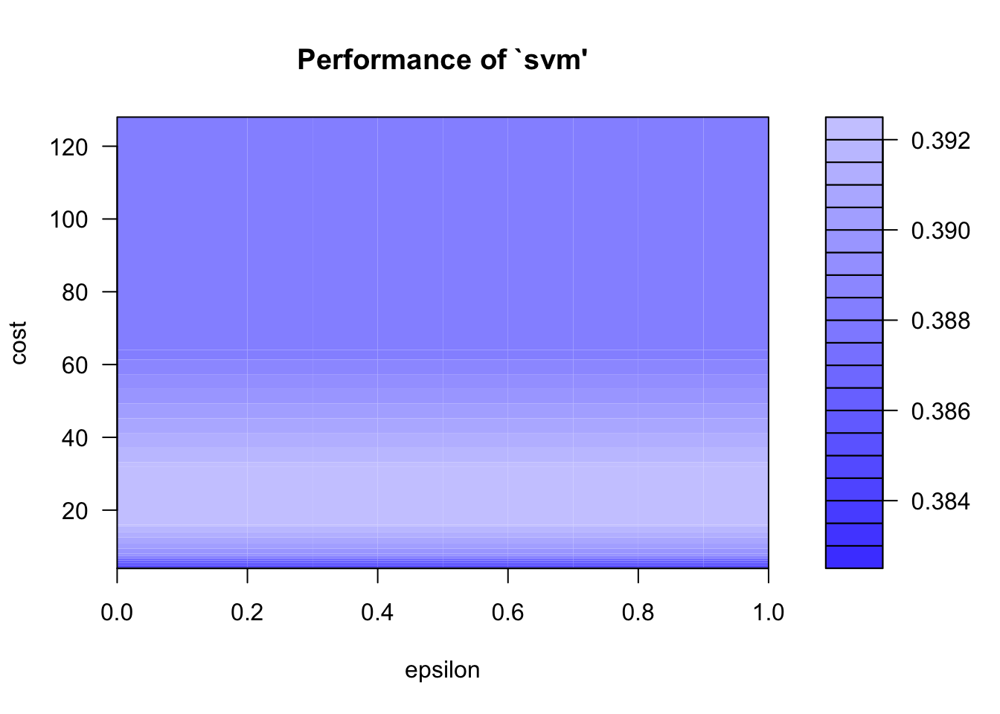

Support Vector Machine
Model with Five RTL Group Levels
Initial Model Results
## Actual
## Prediction 0-6 13-18 19-24 25-30 7-12
## 0-6 0 0 0 0 0
## 13-18 2 16 6 4 8
## 19-24 0 0 4 0 0
## 25-30 0 0 0 0 0
## 7-12 99 119 74 28 204Tuned Model Accuracy
Tuning the model generates an accuracy of 0.606
##
## Parameter tuning of 'svm':
##
## - sampling method: 10-fold cross validation
##
## - best parameters:
## gamma cost
## 0.1 4
##
## - best performance: 0.5939223Best Model Parameters
##
## Call:
## best.svm(x = rtl_group ~ gender + age_group + test_1_pcss_group,
## data = svm_train, kernel = "radial")
##
##
## Parameters:
## SVM-Type: C-classification
## SVM-Kernel: radial
## cost: 1
##
## Number of Support Vectors: 508Best Model Predictions
## Actual
## Prediction 0-6 13-18 19-24 25-30 7-12
## 0-6 0 0 0 0 0
## 13-18 0 1 1 1 0
## 19-24 0 2 0 0 0
## 25-30 0 0 0 0 0
## 7-12 36 44 29 5 72Best Model Accuracy
The generated accuracy does not seem realistic or accurate.
## [1] 1.46Model with Five RTL Group Levels (Alternative Code)
Model Predictions
## Actual
## Predicted 0-6 13-18 19-24 25-30 7-12
## 0-6 0 0 0 0 0
## 13-18 0 0 0 0 0
## 19-24 0 0 0 0 0
## 25-30 0 0 0 0 0
## 7-12 137 182 114 38 284Model Accuracy
This code generates an accuracy of 0.624
## [1] 0.6238411Parameter Tuning Plot

Parameter Tuning Summary
##
## Parameter tuning of 'svm':
##
## - sampling method: 10-fold cross validation
##
## - best parameters:
## epsilon cost
## 0 8
##
## - best performance: 0.5974561
##
## - Detailed performance results:
## epsilon cost error dispersion
## 1 0.0 4 0.6027544 0.06766287
## 2 0.1 4 0.6027544 0.06766287
## 3 0.2 4 0.6027544 0.06766287
## 4 0.3 4 0.6027544 0.06766287
## 5 0.4 4 0.6027544 0.06766287
## 6 0.5 4 0.6027544 0.06766287
## 7 0.6 4 0.6027544 0.06766287
## 8 0.7 4 0.6027544 0.06766287
## 9 0.8 4 0.6027544 0.06766287
## 10 0.9 4 0.6027544 0.06766287
## 11 1.0 4 0.6027544 0.06766287
## 12 0.0 8 0.5974561 0.07000106
## 13 0.1 8 0.5974561 0.07000106
## 14 0.2 8 0.5974561 0.07000106
## 15 0.3 8 0.5974561 0.07000106
## 16 0.4 8 0.5974561 0.07000106
## 17 0.5 8 0.5974561 0.07000106
## 18 0.6 8 0.5974561 0.07000106
## 19 0.7 8 0.5974561 0.07000106
## 20 0.8 8 0.5974561 0.07000106
## 21 0.9 8 0.5974561 0.07000106
## 22 1.0 8 0.5974561 0.07000106
## 23 0.0 16 0.5974561 0.07000106
## 24 0.1 16 0.5974561 0.07000106
## 25 0.2 16 0.5974561 0.07000106
## 26 0.3 16 0.5974561 0.07000106
## 27 0.4 16 0.5974561 0.07000106
## 28 0.5 16 0.5974561 0.07000106
## 29 0.6 16 0.5974561 0.07000106
## 30 0.7 16 0.5974561 0.07000106
## 31 0.8 16 0.5974561 0.07000106
## 32 0.9 16 0.5974561 0.07000106
## 33 1.0 16 0.5974561 0.07000106
## 34 0.0 32 0.6014386 0.07278956
## 35 0.1 32 0.6014386 0.07278956
## 36 0.2 32 0.6014386 0.07278956
## 37 0.3 32 0.6014386 0.07278956
## 38 0.4 32 0.6014386 0.07278956
## 39 0.5 32 0.6014386 0.07278956
## 40 0.6 32 0.6014386 0.07278956
## 41 0.7 32 0.6014386 0.07278956
## 42 0.8 32 0.6014386 0.07278956
## 43 0.9 32 0.6014386 0.07278956
## 44 1.0 32 0.6014386 0.07278956
## 45 0.0 64 0.6067719 0.07353699
## 46 0.1 64 0.6067719 0.07353699
## 47 0.2 64 0.6067719 0.07353699
## 48 0.3 64 0.6067719 0.07353699
## 49 0.4 64 0.6067719 0.07353699
## 50 0.5 64 0.6067719 0.07353699
## 51 0.6 64 0.6067719 0.07353699
## 52 0.7 64 0.6067719 0.07353699
## 53 0.8 64 0.6067719 0.07353699
## 54 0.9 64 0.6067719 0.07353699
## 55 1.0 64 0.6067719 0.07353699
## 56 0.0 128 0.6067719 0.07353699
## 57 0.1 128 0.6067719 0.07353699
## 58 0.2 128 0.6067719 0.07353699
## 59 0.3 128 0.6067719 0.07353699
## 60 0.4 128 0.6067719 0.07353699
## 61 0.5 128 0.6067719 0.07353699
## 62 0.6 128 0.6067719 0.07353699
## 63 0.7 128 0.6067719 0.07353699
## 64 0.8 128 0.6067719 0.07353699
## 65 0.9 128 0.6067719 0.07353699
## 66 1.0 128 0.6067719 0.07353699Summary of Best Model
##
## Call:
## best.tune(method = svm, train.x = rtl_group ~ gender + age_group +
## test_1_pcss_group, data = svm_data, ranges = list(epsilon = seq(0,
## 1, 0.1), cost = 2^(2:7)))
##
##
## Parameters:
## SVM-Type: C-classification
## SVM-Kernel: radial
## cost: 8
##
## Number of Support Vectors: 661
##
## ( 200 137 176 110 38 )
##
##
## Number of Classes: 5
##
## Levels:
## 0-6 13-18 19-24 25-30 7-12Final Prediction Table
## Actual
## Predicted 0-6 13-18 19-24 25-30 7-12
## 0-6 0 0 0 0 0
## 13-18 2 15 1 5 5
## 19-24 0 13 22 0 4
## 25-30 0 0 0 0 0
## 7-12 135 154 91 33 275Final Prediction Accuracy
The model generates an accuracy of 0.587
## [1] 0.586755Model with Two RTL Group Levels
Initial Model Results
## Actual
## Prediction 0-12 13-30
## 0-12 295 208
## 13-30 20 42Tuned Model Accuracy
Tuning the model generates an accuracy of 0.398
##
## Parameter tuning of 'svm':
##
## - sampling method: 10-fold cross validation
##
## - best parameters:
## gamma cost
## 0.16 1
##
## - best performance: 0.3966479Best Model Parameters
##
## Call:
## best.svm(x = rtl_group ~ gender + age_group + test_1_pcss_group,
## data = svm_train2, kernel = "radial")
##
##
## Parameters:
## SVM-Type: C-classification
## SVM-Kernel: radial
## cost: 1
##
## Number of Support Vectors: 496Best Model Predictions
## Actual
## Prediction 0-12 13-30
## 0-12 99 67
## 13-30 7 17Best Model Accuracy
The generated accuracy does not seem realistic or accurate.
## [1] 2.32Model with Two RTL Group Levels (Alternative Code)
Model Predictions
## Actual
## Predicted 0-12 13-30
## 0-12 394 279
## 13-30 27 55Model Accuracy
This code generates an accuracy of 0.405
## [1] 0.405298Parameter Tuning Plot

Parameter Tuning Summary
##
## Parameter tuning of 'svm':
##
## - sampling method: 10-fold cross validation
##
## - best parameters:
## epsilon cost
## 0 4
##
## - best performance: 0.3828596
##
## - Detailed performance results:
## epsilon cost error dispersion
## 1 0.0 4 0.3828596 0.06738665
## 2 0.1 4 0.3828596 0.06738665
## 3 0.2 4 0.3828596 0.06738665
## 4 0.3 4 0.3828596 0.06738665
## 5 0.4 4 0.3828596 0.06738665
## 6 0.5 4 0.3828596 0.06738665
## 7 0.6 4 0.3828596 0.06738665
## 8 0.7 4 0.3828596 0.06738665
## 9 0.8 4 0.3828596 0.06738665
## 10 0.9 4 0.3828596 0.06738665
## 11 1.0 4 0.3828596 0.06738665
## 12 0.0 8 0.3895263 0.07238325
## 13 0.1 8 0.3895263 0.07238325
## 14 0.2 8 0.3895263 0.07238325
## 15 0.3 8 0.3895263 0.07238325
## 16 0.4 8 0.3895263 0.07238325
## 17 0.5 8 0.3895263 0.07238325
## 18 0.6 8 0.3895263 0.07238325
## 19 0.7 8 0.3895263 0.07238325
## 20 0.8 8 0.3895263 0.07238325
## 21 0.9 8 0.3895263 0.07238325
## 22 1.0 8 0.3895263 0.07238325
## 23 0.0 16 0.3921579 0.07038696
## 24 0.1 16 0.3921579 0.07038696
## 25 0.2 16 0.3921579 0.07038696
## 26 0.3 16 0.3921579 0.07038696
## 27 0.4 16 0.3921579 0.07038696
## 28 0.5 16 0.3921579 0.07038696
## 29 0.6 16 0.3921579 0.07038696
## 30 0.7 16 0.3921579 0.07038696
## 31 0.8 16 0.3921579 0.07038696
## 32 0.9 16 0.3921579 0.07038696
## 33 1.0 16 0.3921579 0.07038696
## 34 0.0 32 0.3921404 0.06858698
## 35 0.1 32 0.3921404 0.06858698
## 36 0.2 32 0.3921404 0.06858698
## 37 0.3 32 0.3921404 0.06858698
## 38 0.4 32 0.3921404 0.06858698
## 39 0.5 32 0.3921404 0.06858698
## 40 0.6 32 0.3921404 0.06858698
## 41 0.7 32 0.3921404 0.06858698
## 42 0.8 32 0.3921404 0.06858698
## 43 0.9 32 0.3921404 0.06858698
## 44 1.0 32 0.3921404 0.06858698
## 45 0.0 64 0.3881754 0.06889098
## 46 0.1 64 0.3881754 0.06889098
## 47 0.2 64 0.3881754 0.06889098
## 48 0.3 64 0.3881754 0.06889098
## 49 0.4 64 0.3881754 0.06889098
## 50 0.5 64 0.3881754 0.06889098
## 51 0.6 64 0.3881754 0.06889098
## 52 0.7 64 0.3881754 0.06889098
## 53 0.8 64 0.3881754 0.06889098
## 54 0.9 64 0.3881754 0.06889098
## 55 1.0 64 0.3881754 0.06889098
## 56 0.0 128 0.3881754 0.06889098
## 57 0.1 128 0.3881754 0.06889098
## 58 0.2 128 0.3881754 0.06889098
## 59 0.3 128 0.3881754 0.06889098
## 60 0.4 128 0.3881754 0.06889098
## 61 0.5 128 0.3881754 0.06889098
## 62 0.6 128 0.3881754 0.06889098
## 63 0.7 128 0.3881754 0.06889098
## 64 0.8 128 0.3881754 0.06889098
## 65 0.9 128 0.3881754 0.06889098
## 66 1.0 128 0.3881754 0.06889098Summary of Best Model
##
## Call:
## best.tune(method = svm, train.x = rtl_group ~ gender + age_group +
## test_1_pcss_group, data = svm_data2, ranges = list(epsilon = seq(0,
## 1, 0.1), cost = 2^(2:7)))
##
##
## Parameters:
## SVM-Type: C-classification
## SVM-Kernel: radial
## cost: 4
##
## Number of Support Vectors: 620
##
## ( 310 310 )
##
##
## Number of Classes: 2
##
## Levels:
## 0-12 13-30Final Prediction Table
## Actual
## Predicted 0-12 13-30
## 0-12 406 273
## 13-30 15 61Final Prediction Accuracy
The model generates an accuracy of 0.381
## [1] 0.381457